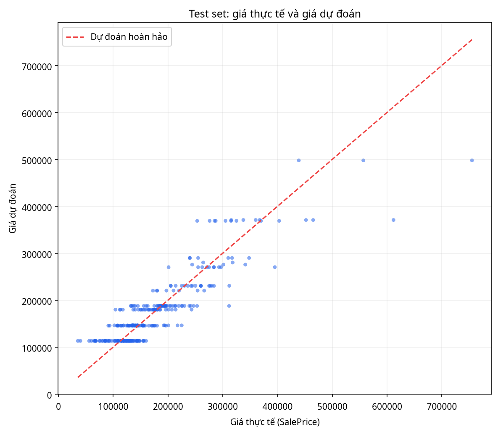
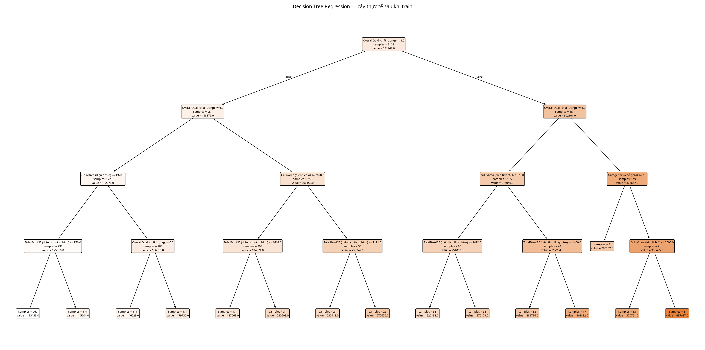

1. Cấu hình và thống kê lần chạy
2. Kết quả trên tập Test
| # | Giá thực tế | Dự đoán | Sai số tuyệt đối |
|---|
3. Biểu đồ kết quả

4. Cây quyết định tương tác
Sơ đồ dưới đây được dựng từ chính cấu trúc cây đã train. Hãy click vào một node để xem thông tin chi tiết của node đó.
Xem ảnh PNG cây gốc sau khi train

5. Duyệt node cây bằng dữ liệu nhập
KẾT QUẢ
—
Nhập thông tin rồi bấm Dự đoán.
6. Ý nghĩa của mô hình
Nút phân chia
Mỗi nút kiểm tra một điều kiện, ví dụ OverallQual ≤ ngưỡng. Nhánh trái và phải được chọn đúng theo dữ liệu nhập.
Nút lá
Giá dự đoán tại nút lá là giá trị trung bình của các mẫu huấn luyện đi tới lá đó.
Kiểm tra công bằng
Train và Test dùng cùng random seed, cùng tập đặc trưng và cùng quy tắc điền missing để metrics có thể tái lập.